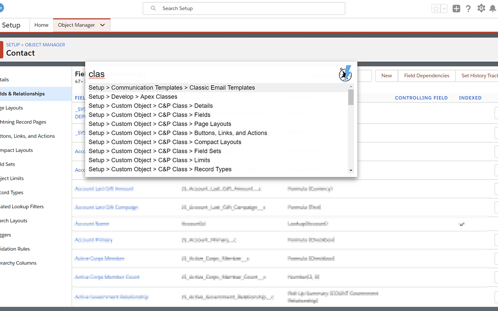

Salesforce Navigator for Lightning
Salesforce Navigator for Lightning
Compatible with Lightning and Classic

NOTE: You must create a CSP Trusted Site Definition for your Classic instance in order for this extension to work - more info on Salesforce's documentation
Open the search bar and go straight to:
- Object List views with "List <Object>"
- Create a new record with "New <Object>"
- Go directly a Setup page by typing it's name
- Access Object customizations with "<Object> <Section>" (e.g. "Contact Fields")
- Search all records with "? <search terms>"
- Go to your Home page with "Home"
- Switch between Lightning and Classic with "Toggle Lightning"
- Switch between Detailed and Simple mode with "Toggle Detailed Mode"
- Commands looking weird? Run "Refresh Metadata" to make sure you have what you need
- [CLASSIC ONLY] Login as another user with "Login as <partial match of username>"
All commands work with partial matches, for instance typing "li cas" will select "List Cases"
Press Enter or click on the option to run the command, or hold Ctrl or Shift and press Enter to open it in a new tab